15.
Databases
Stephen Ramsay
Introduction
Databases are an ubiquitous feature of life in the modern age, and yet the most all-encompassing definition of the term "database" – a system that allows for the efficient storage and retrieval of information – would seem to belie that modernity. The design of such systems has been a mainstay of humanistic endeavor for centuries; the seeds of the modern computerized database being fully evident in the many text-based taxonomies and indexing systems which have been developed since the Middle Ages. Whenever humanists have amassed enough information to make retrieval (or comprehensive understanding) cumbersome, technologists of whatever epoch have sought to put forth ideas about how to represent that information in some more tractable form.
The computerized database, while a new development in this broad historical schema, nonetheless appeared more or less simultaneously with the early use of computers in academic and commercial environments. In such contexts, the essential problem of organization and efficient retrieval (usually understood as falling under the rubric of data structures and algorithms respectively) is complicated by the need for systems which facilitate interaction with multiple end users, provide platform-independent representations of data, and allow for dynamic insertion and deletion of information. The use of database technology among humanists has been invigorated by the realization – common, perhaps, to many other similar convergences – that a number of fascinating problems and intellectual opportunities lurk beneath these apparently practical matters. The inclusion of certain data (and the attendant exclusion of others), the mapping of relationships among entities, the often collaborative nature of dataset creation, and the eventual visualization of information patterns, all imply a hermeneutics and a set of possible methodologies that are themselves worthy objects for study and reflection.
This chapter provides an introduction to these issues by working through the design and implementation of a simple relational database (our example stores basic information about books in print). The intent, of course, is to remove some of the complexities and idiosyncrasies of real-world data in order that the technical and conceptual details of database design might more readily emerge. The data to which humanist scholars are accustomed – literary works, historical events, textual recensions, linguistic phenomena – are, of course, rarely simple. We would do well, however, to bear in mind that what might be viewed as a fundamental inadequacy has often proved to be the primary attraction of relational database systems for the humanist scholar. Rather than exploiting a natural congruity between relational ontologies and humanistic data, scholars have often sought insight in the many ways in which the relational structure enforces a certain estrangement from what is natural. The terms we use to describe books in a bookstore (authors, works, publishers) and the relationships among them (published by, created by, published in) possess an apparent stability for which the relational model is ideally suited. The most exciting database work in humanities computing necessarily launches upon less certain territory. Where the business professional might seek to capture airline ticket sales or employee data, the humanist scholar seeks to capture historical events, meetings between characters, examples of dialectical formations, or editions of novels; where the accountant might express relations in terms like "has insurance" or "is the supervisor of", the humanist interposes the suggestive uncertainties of "was influenced by", "is simultaneous with", "resembles", "is derived from."
Such relationships as these hold out the possibility not merely of an increased ability to store and retrieve information, but of an increased critical and methodological self-awareness. If the database allows one to home in on a fact or relationship quickly, it likewise enables the serendipitous connection to come forth. Relational databases in humanistic study are, in this sense, not so much pre-interpretative mechanisms as para-interpretative formations. As with so many similar activities in digital humanities, the act of creation is often as vital to the experiential meaning of the scholarly endeavor as the use of the final product.
Relational database management systems (RDBMS) represent the most popular way of creating searchable ontologies both among computing humanists and among professionals in other areas of research and industry, and so this chapter will be concerned primarily with the design and implementation of database systems using the relational model. Still, the modern database landscape continues to evolve. Some consideration of where databases may yet be going (and where humanists may be going with database technology) is therefore apposite as well.
The Relational Model
E. F. Codd first proposed the relational model in a 1970 article in Communications of the ACM entitled "A Relational Model of Data for Large Shared Databanks." Codd's proposal endeavored to overcome the limitations of previous systems, which had suffered from difficulties related both to inefficient (which is to say slow) access and unwieldy storage mechanisms – inefficiencies that often resulted from redundancies in the underlying data representation. Codd's model made great strides forward in both areas, and yet his achievement is perhaps more acutely evident in the mathematical presentation of his ideas. One researcher, who refers to the 1970 paper as "probably the most famous paper in the entire history of database management", notes:
It was Codd's very great insight that a database could be thought of as a set of relations, that a relation in turn could be thought of as a set of propositions …, and hence that all of the apparatus of formal logic could be directly applied to the problem of database access and related problems.
(Date 2001)
This fundamental idea has spawned a vast literature devoted to database theory, and while there have been several major additions to the relational model, the relational databases of today continue to operate on the basis of Codd's insights.
Database Design
The purpose of a database is to store information about a particular domain (sometimes called the universe of discourse) and to allow one to ask questions about the state of that domain. Let us suppose, for example, that we are creating a database that will contain information about current editions of American novels. Our goal will be to create a system that can store information about authors, works, and publishers, and allow us to ask questions like "What publications did Modern Library produce in 1992?" and "Which works by Herman Melville are currently in print?" The simplest database of all would simply list the data in tabular form (see table 15.1).
This database might be expanded to include a vast collection of authors and works. With the addition of some mechanism with which to store and query the data, we can easily imagine a system capable of answering the questions we would like to pose. Yet the inefficiencies, which the relational model endeavors to overcome, are evident even in this simple example. A search for "Mark Twain" will require that the system continue iterating through the rows after it has found its first hit in order to ensure that the relevant matches have been found. This is because our data model allows – and indeed, demands – that the name of the author be entered into every row in which a new work is introduced. Similar redundancies occur with dates of publication, publisher names, and publisher addresses. Moreover, a change to an author's name (for example, the decision to enter "Samuel Clemens" in place of the author's pen name) will require that we update all fields in which the original name appears. Even if we devise some mechanism for ensuring a certain vigilance on the part of the machine, we are still left with a version of the same problem: having to go to "places instead of just one. In our example, the redundancy seems unproblematic – any machine can make quick work of a database with six items". In a system containing thousands or perhaps millions of items, the extra time and space required to perform search algorithms can become a severe liability.
Table 15.1
| Last | First | YOB | YOD | Title | Pub Year | Publisher | Pub Address |
| Twain | Mark | 1835 | 1910 | Huckleberry | 1986 | Penguin USA | New York |
| Twain | Mark | 1835 | 1910 | Tom Sawyer | 1987 | Viking | New York |
| Cather | Willa | 1873 | 1947 | My Antonia | 1995 | Library of America | New York |
| Hemingway | Ernest | 1899 | 1961 | The Sun Also Rises | 1995 | Scribner | New York |
| Wolfe | Thomas | 1900 | 1938 | Look Homeward, Angel | 1995 | Scribner | New York |
| Faulkner | William | 1897 | 1962 | The Sound and the Furry | 1990 | Random House | New York |
Relational modeling attempts to factor these redundancies out of the system. We can begin modifying our original design by isolating the individual entities in the domain at a more abstract level; that is, by locating the types of information that vary independently of one another. The preliminary outline shown in figure 15.1 might emerge as one possible representation of the domain.
Each of the boxes in figure 15.1 illustrates a particular entity with a set of associated attributes. We have retained all the information from the original design, but have sequestered the various entities from one another according to certain logical groupings: authors (who have last names, first names, and dates of birth and death), works (which have titles and years of publication), and publishers (which have names and cities where they are headquartered). Often, the nouns we use to describe the domain and the recurrence of the word "have" helps to establish these entities and their attributes. To this basic outline we may also add a set of verb phrases describing the nature of the relationships among the entities. For example, authors create works, and works are, in turn, published by publishers. The addition of this information can then give rise to what is called an entity relationship (ER) diagram (see figure 15.2).
This diagram captures the basic relationships we have isolated, but it remains to say how many instances of a single entity can be associated with other entities in the model. For example, one author may contract with several publishers, and a publisher may offer many different works by multiple authors. There are several ways to capture these features diagrammatically1. We will simply use the number "1" to indicate a single instance and an "M" to indicate multiple instances (see figure 15.3). We may then read the relationship line connecting authors and works to mean "One author has many works."
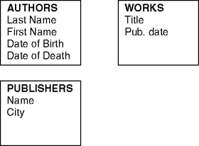
Figure 15.1
Thus far, we have been pursuing the logical design of our database – a design entirely independent of both the eventual machine representation of the data and of the end user's view of the information contained within it. We would do well at this point to imagine how this logical structure might be populated with the particular instances from the first model. To do this, we need to make a subtle mental shift in the way we view the entity relationship diagram. We might be tempted to see the various boxes as storage areas that can hold instances of authors' last names, work titles, and so forth. However, we have been really modeling the generic form that the particular instances of data will take. The populated database is properly conceived of as a set of tables with rows and columns, in which each row corresponds to the entities and each column to the attributes in the ER diagram. These rows are usually referred to as records and the intersection of rows and columns as fields. Table 15.2, for example, is a mock-up of a populated database built according to the terms of the ER diagram.
This more concrete view of our database captures the entities, but it makes no mention of the relationships. In order to represent the relationships between records, we need to introduce some variable that can hold these connections.
Our ability to do this will be significantly enhanced if we can devise some way to refer to each individual instance of a particular entity as a unique datum. After all, the final database will not merely connect authors to works in some generic way, but will reflect the fact that, for example, the author Mark Twain created both Huckleberry Finn and Tom Sawyer. The usual method for establishing this uniqueness is to create a primary key for each record – a unique value associated with each individual record in a table2. This value is simply a new attribute which can be added to our ER diagram, and by extension, a new column in the final database for each record type. The author entity, for example, may be modified as shown in figure 15.4.
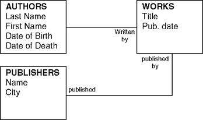
Figure 15.2
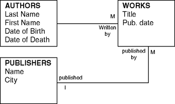
Figure 15.3
Table 15.2
| AUTHORS | |||
|---|---|---|---|
| Last Name | First Name | Year of Birth | Year of Death |
| Twain | Mark | 1835 | 1910 |
| Cather | Willa | 1873 | 1947 |
| Hemingway | Ernest | 1899 | 1961 |
| Wolfe | Thomas | 1900 | 1935 |
| Faulkner | William | 1897 | 1962 |
| WORKS | |
|---|---|
| Title | PubYear |
| The Adventures of Huckleberry Finn | 1986 |
| Tom Sawyer | 1987 |
| My Antonia | 1995 |
| The Sun also Rises | 1995 |
| Look Homeward, Angel | 1995 |
| The Sound and the Fury | 1990 |
| PUBLISHERS | |
|---|---|
| Name | City |
| Penguin USA | New York |
| Library of America | New York |
| Schribner | New York |
| Viking | New York |
| Random House | New York |
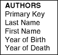
Figure 15.4
The resulting database table would then include a new column to hold this value (see table 15.3). With the other entities similarly modified, we now have a way of referring to each individual record in a table without ambiguity.
The next step is really at the heart of the relational model. In order to capture the one-to-many (1:M) relationship between authors and works, we introduce a second key attribute to the entities on the "many" side of the relationship – one that can hold a reference (or pointer) back to the entity on the "one" side of the relationship. This reference is, like the primary key, simply another attribute called a foreign key. Table 15.4, for example, shows how the "Works" table would look with additional fields for primary and foreign keys.
The foreign key field contains the primary key of the record with which it is associated. Thus the records for The Adventures of Huckleberry Finn and Tom Sawyer (which have been assigned primary keys 1 and 2, respectively) now contain foreign key references to the record in the "Authors" table which bears primary key 1 (the record for "Mark Twain"). In this way, the database is able to retain one reference for the author "Mark Twain." The redundancy that hindered the original design has been eliminated.
Unfortunately, the database still contains other instances of redundancy. For example, every publisher in our database is located in New York, which means this information is repeated for all six publisher records. Theoretically, this situation could have been avoided if we had held ourselves to a very strict interpretation of "types of information that vary independently of one another" in our initial ER diagram. In practice, such redundancies are often difficult to discern upon initial analysis of the domain. It may even be that some redundancies only appear after a considerable amount of data has already been entered into a prototype system.
Table 15.3
| AUTHORS | ||||
|---|---|---|---|---|
| Author ID | Last Name | First Name | Year of Birth | Year of Death |
| 1 | Twain | Mark | 1835 | 1910 |
| 2 | Cather | Willa | 1873 | 1947 |
| 3 | Hemingway | Ernest | 1899 | 1961 |
| 4 | Wolfe | Thomas | 1900 | 1938 |
| 5 | Faulkner | William | 1897 | 1962 |
Table 15.4
| WORKS | |||
|---|---|---|---|
| Work ID | Title | PubYear | Author ID |
| 1 | The Adventures of Huckleberry Finn | 1986 | 1 |
| 2 | Tom Sawyer | 1987 | 1 |
| 3 | My Antonia | 1995 | 2 |
| 4 | The Sun Also Rises | 1995 | 3 |
| 5 | Look Homeward, Angel | 1995 | 4 |
| 6 | The Sound and the Fury | 1990 | 5 |
In any event, eliminating the redundancy in the "Publishers" table is simply a matter of breaking the "City" attribute off into its own table, assigning a primary key value to each record instance, and providing a new foreign key field in the "Publishers" table which can hold a reference to the correct city. In other words, we need to take one of our attributes and elevate it to the status of entity (see table 15.5).
Since primary key values in one table can be referenced from multiple tables as foreign keys, this restructuring may have a useful side effect if we ever decide to add "Place of Birth" to the Authors table.
Table 15.5
| PUBLISHERS | ||
|---|---|---|
| Pub ID | Name | City ID |
| 1 | Penguin USA | 1 |
| 2 | Library of America | 1 |
| 3 | Scribner | 1 |
| 4 | Viking | 1 |
| 5 | Random House | 1 |
| CITIES | |
|---|---|
| CityID | City |
| 1 | New York |
There is another kind of relationship in this domain which isn't represented; namely, the many-to-many (M:M) relationship. This situation might easily arise if several publishers release editions of the same work. We would naturally describe this relationship as being, like all the relationships in the current design, one-to-many, but in this case, there is already a one-to-many relationship going the other way (from "Publishers" to "Works"). One might be tempted simply to introduce a foreign key pointing to "Works" from "Publishers" to complement the foreign key pointing from "Publishers" to "Works." However, the more apt solution is to abstract the relationship into a new entity called an association (or junction table). An association is simply a new table which contains the two related foreign keys (see table 15.6). This association captures the fact that Penguin USA (Pub ID 1) publishes The Adventures of Huckleberry Finn (Work ID 1) and an edition of Tom Sawyer (Work ID 2).
Each record in an association may be assigned a primary key, but in this case (and in the case of most associations) the combination of the two primary keys is understood to represent a unique combination. Most RDBMSs therefore allow one to declare the pair of values to be the primary key for that record (the creation of these compound keys will be discussed in the next section).
We have now analyzed our domain with entity-relationship modeling and have begun to factor out the major redundancies in the model. Readers interested in the formal explication of these methodologies will find abundant resources in the scholarly literature of the field, and while it is unnecessary to go into these matters here, at least one aspect of the more technical discussion deserves mention even in an introductory context.
Database theorists (and serious designers) often speak of databases as being in one of five normal forms. The normal forms may be stated in set theoretic terms, but they may also be stated more simply as design criteria by which to judge the soundness of one's design. For example, one practically minded book paraphrases first normal form by stating that "at each row-and-column intersection, there must be one and only one value, and that value must be atomic: there can be no repeating groups in a table that satisfies first normal form" (Bowman et al. 1999).
By the time a database is in fifth normal form, all redundancy has been removed; as Bowman puts it, "Tables normalized to this extent consist of little more than primary keys" (Bowman et al. 1999). This has the advantage of making it easier for the RDBMS to ensure the overall integrity of the data, but one may find that queries on those data become rather confusing to compose. As with most matters related to computer programming, one needs to balance the goals of correctness against the practical exigencies of the system and its users.
Table 15.6
| PUBLISHER-WORKS TABLE | |
|---|---|
| Pub ID | Work ID |
| 1 | 1 |
| 1 | 2 |
| 2 | 2 |
| 3 | 3 |
| 4 | 4 |
Schema Design
Up until now, our meditations on database design have been confined to what one might normally undertake at the whiteboard. The actual implementation of the design is much more akin to programming. Fortunately, there is little in the implementation stage that requires new concepts; for the most part, we simply need to translate our design into a representation intelligible to the machine. This representation is usually referred to as a database schema, and is created using Structured Query Language (SQL)3.
There are a number of excellent SQL-compliant RDBMSs available to the humanist scholar. The majority of humanities computing projects that use databases employ free (open source) systems, of which the most popular are MySQL, mSQL, and Post-greSQL. There are also a number of commercial systems in use (Oracle, Microsoft Access, IBM DB2). The systems differ somewhat in their feature sets and in the amount of documentation available, but all provide efficient, feature-rich implementations of the relational model with advanced security and management functions. For our database, we will use PostgreSQL – a free, well-supported RDBMS for Unix-like systems which can be downloaded over the Internet.4
The database schema is nothing more than a machine-readable representation of the ER diagram. We may begin by laying out the various entities and their attributes, but since we are now giving instructions to the machine, we need to be more specific about the precise nature of the data to be entered:
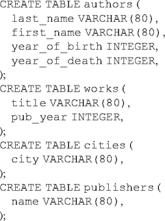Like most programming languages, SQL includes the notion of a datatype. Datatype declarations help the machine to use space more efficiently and also provide a layer of verification for when the actual data is entered (so that, for example, a user cannot enter character data into a date field). In this example, we have specified that the last_name, first_name, title, city, and name fields will contain character data of varying length (not to exceed 80 characters), and that the year_of_birth, year_of_cleath, and pub_year fields will contain integer data. Other possible datatypes include DATE (for day, month, and year data), TEXT (for large text blocks of undetermined length), and BOOLEAN (for true/ false values). Most of these can be further specified to account for varying date formats, number bases, and so forth. PostgreSQL, in particular, supports a wide range of datatypes, including types for geometric shapes, Internet addresses, and binary strings.
Databases often differ in the way they represent (and ensure the integrity of) primary keys. In PostgreSQL, the usual method is to create a separate mechanism for generating and keeping track of unique numeric values, and to have the tables containing the entities retrieve a value from that mechanism each time a new record is created. So, for example, to create a primary key for the authors table, we first create what is called a sequence table that will hold the set of unique values for that table:
We can then add a new field to the author table which will have as its default value the next value called from the appropriate sequence:
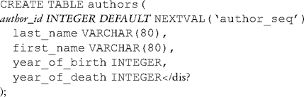This new line thus amounts to the following declaration about the author_icl field: the author_icl will have as its default value an integer that corresponds to the next value provided by the sequence named author_seq.5
We also want to declare this value specifically as the primary key for the table. This is accomplished with the following addition:
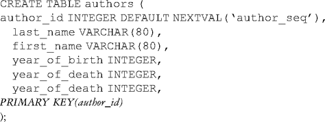A foreign key is simply another data field, which, like the primary key field, has been specifically designated as a key. In order to capture the one-to-many relationship between works and authors, for example, we would modify the works table as follows:
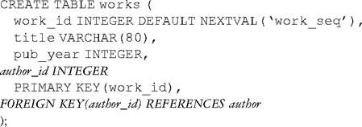The PRIMARY KEY () specifier also makes it easy to declare the publisher and work ids in our publisher/work association as a compound key:
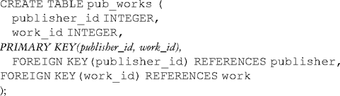The designation of primary and foreign keys is one of the most important aspects of schema design, because it helps the system to achieve what is called referential integrity. Referential integrity is compromised when we delete a record that contains a reference to another record. So, for example, if we were to delete an author from the authors table, we might leave a reference to that author in the works table without a referent. A good RDBMS will use the primary and foreign key references either to prevent this from occurring or to warn the database administrator that the operation will result in a dangling reference (sometimes called a null pointer).
The method for creating an empty database and getting this schema into the RDBMS varies from system to system. Most RDBMSs provide command-line tools for setting up databases and for executing commands through an interactive command interpreter. The documentation for the particular RDBMS will discuss such matters in detail6.
Importing Data
Importing data into this schema requires the use of another set of SQL commands. The most useful of these is the INSERT keyword, which adds a record to one of the tables specified in the schema:
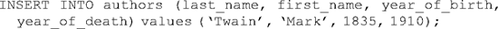The structure of this command is such that the target fields are declared in the first set of parentheses and the actual values in the second (the structure of the DELETE command, for removing data from a database, uses the same syntax). In most systems, character strings must be enclosed in quotation marks. Notice also that the INSERT statement does not include a primary key because our database schema has already instructed the system to use the next value in the sequence table as the default. A work record may be added in much the same way:
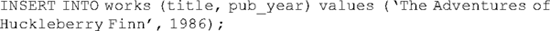In this case, however, we need to add a foreign key value that contains a primary key from the authors table. There are three ways to accomplish this. The first is simply to look up the appropriate record in the authors table before executing the INSERT statement for the work, note its primary key, and add this to the statement. The second way is to perform an UPDATE statement after the record has been created, which adds the primary key for the author to the foreign key field author_icl of the work record. The third, and perhaps the most efficient way, is to embed the statement that looks up the appropriate primary key into the INSERT statement for adding a work record. All three of these methods require that we have an understanding of how to query the database for information, so let us defer this discussion for a moment while we explore the query commands of SQL.
Database Queries
The database administrator can query the database using the SELECT command. To retrieve all the last names currently in the authors table, for example, one would execute the following command:
Most RDBMSs will produce output that looks something like this:

In most circumstances, however, we want to create a more complex query that will let us home in on a particular record. Here, for example, is a SELECT statement that only selects authors born after 1890:
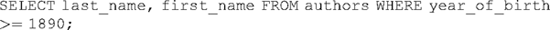This statement begins by isolating two fields which should be returned to the user, but then adds a WHERE clause which qualifies the search according to particular criteria – in this case, to records in which the integer value contained in the year_of_birth field is greater than (or equal to) 1890. The result is a list of authors:
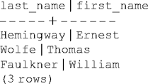Assuming we have already created records for Mark Twain and for The Adventures of Huckleberry Finn, we can now use the query syntax to discover the primary key for Mark Twain and use it to fill in the foreign key field for his works. The first is accomplished with a SELECT statement:
The system returns the value "1." We can now use an UPDATE statement to modify the appropriate work record:
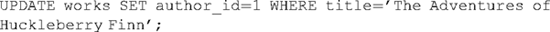The more efficient method alluded to above – loading a record into the works table with the appropriate foreign key in one statement – uses what is called a subselect:
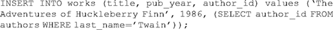This statement follows the usual syntax of the INSERT statement, except that the last value in the second set of parentheses (the one pertaining to author_id) is itself a SELECT statement designed to return a single value: the primary key for the author record with the word "Twain" in the last_name field.
Database queries can reach a significant level of complexity; the WHERE clause can accept Boolean operators (e.g.''WHERE year_of_birth > 1890 AND year_of_-birth < 1900''), and most SQL implementations offer keywords for changing the ordering of the output (e.g. ORDER BY year_of_birth). Taking full advantage of the relational model, moreover, requires that we be able to gather information from several tables and present it in one result list. This operation is called a join.
Let us suppose that we want to return a single result set that lists the authors' names, titles, and publishers of all works in the database. Doing so will require that we gather information from the author, publisher, and work tables, and also from the association that links publishers with works. The syntax for constructing this query follows the general template for SELECT … FROM … WHERE … but with a twist:
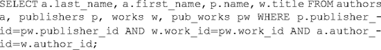Any database of non-trivial complexity will have equivalent column names spread across several tables. Such equivalence will naturally occur with columns representing common concepts (such as "date"), but it will occur inevitably with the keys (since the primary key label in one table will often occur as the foreign key label in several others). The key to understanding this join query lies in the FROM clause, where each table participating in the join is aliased to a short variable. In this query, the variable a will stand in for the authors table, w for works, and so on. Thus we may read the first part of the query as saying "Select the last_name field from the authors table, the first_name field from the authors table, the name field from the publishers table, and the title field from the works table." The WHERE clause then tries to match up the appropriate key columns: the publisher_id in the publishers and pub_works tables must match, the work_id in the works and pub_works tables must match, and the author_ids in the authors and works tables must match. The RDBMS will then return all records that match all of these criteria in the order in which they were requested in the first part of the query:
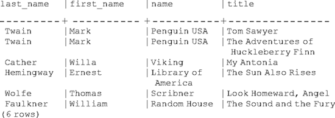Constraining this query to a single author is simply a matter of adding another constraint to the WHERE clause: au . last_name = d 'Twain'.
The necessity for join operations (and subselects, which can often be used to accomplish the same thing) increases as the databases approach full normalization. Database administrators wishing to take full advantage of a good relational design will want to study the particular features of their SQL implementation closely.
Database Management
A good RDBMS will include all the facilities necessary for implementing a schema, importing data into the system, and performing queries. However, such facilities represent only part of the overall set of functions and capabilities necessary for creating a production system.
Prudence would suggest that only a few privileged users should possess the ability to create and destroy databases, and that a broader (but not unlimited) set of users be able to add data to existing databases. There may also be administrative data stored in the database that are not intended for ordinary users of the system. All of the major RDBMSs provide facilities – ranging from simple permissions files to elaborate security systems – for limiting user access to the system. Most simply use a separate database (integral to the RDBMS itself) that permits or denies the ability to run specific commands (often using the GRANT and REVOKE keywords from SQL). Since RDBMSs usually run as network processes (in order to allow for remote connections), some mechanism should also be in place for limiting connections to particular network domains. Unlike simple user applications (which usually come with a reasonable set of security defaults), advanced multi-user applications often assume that the administrator will take the time to study the security model carefully and implement the appropriate procedures. The assumption that users will do this is perhaps naive, but the assumption that the developers have already done everything to make the particular installation secure can be reckless indeed.
Transaction management represents another related set of concerns. Suppose that we had created a large file full of INSERT statements for the initial load of our data, but had left off the semicolon at the end of one of the statements. In all likelihood, the RDBMS (interpreting each INSERT statement as a discrete SQL operation) would execute the first n number of statements, inserting the data for each one, only to break in the middle of the list. We could perhaps delete the data already inserted, fix the error in the file, and reload the entire file, or perhaps we could erase the INSERT statements from the file that we have already executed and start anew. We would do better, however, if we had some way to declare all the INSERT statements in the file as an "all-or-nothing" block; the database has to perform all of these operations successfully or else it must exit with a warning, having performed none of them. Most systems provide some method for declaring a set of statements as a transaction block of this kind. In PostgreSQL, for example, the keywords are BEGIN (for signaling the beginning of a transaction), COMMIT (for executing the statements in the event that the proposed operations would generate no errors), and ROLLBACK (for undoing a set of operations).7
While the relational model lends itself to efficient storage and retrieval mechanisms, the sheer number of insertions, deletions, and updates on a production database system will often result in a certain fragmentation of the data (much in the way a hard drive can become fragmented after many frequent read-write operations). Much research has been devoted to finding new ways to defragment and otherwise optimize storage and retrieval in heavily used RDBMSs. While some of these operations occur behind the scenes, others are designed to be customized by the administrator for local circumstances. Such optimizations become more and more pertinent as a database (or a userbase) grows in size, and administrators will want to avail themselves of these facilities when appropriate.
Databases and Software Development
Database administrators (particularly those working in a Unix environment) will often find that the humble command-line interface represents the most efficient way to create database schema, load large files full of SQL statements, check the validity of queries, and perform the various tasks associated with user accounts and security. However, many database applications in humanities computing are intended for use outside the group of scholars and developers implementing the system. In such cases, low-level access to the RDBMS is rarely desirable. Indeed, it is often useful to design a system that shields users from SQL entirely.
The construction of middleware systems intended to provide such abstraction is among the more common software development tasks in humanities computing. In the case of both standalone and web-based applications, the usual goal is to place the execution of SQL queries and commands "in between" the user interface and the underlying RDBMS. Such a design (often called an n-tiered design) has the additional virtue of allowing the interface, database, and intervening programming logic to vary independently of one another; in a well-designed system, a change to the user interface (for example) would ideally imply only minor changes to the other tiers. Fortunately, nearly every programming language in common use among computing humanists provides elaborate mechanisms for executing SQL commands against a database from within an application.
The DBI (or DataBase independent) module is an extension to the Perl programming language which provides a set of functions and variables for communicating with an RDBMS. In addition to allowing one to pass SQL statements to a database, retrieve results, and restructure data for delivery (to, for example, a web browser), DBI also provides an extremely powerful plug-in architecture that allows one to use the same program with several database implementations. So, for example, a program using the DBI interface could retrieve values from a web form, embed those values in a series of SQL statements, and pass them off to the RDBMS. Instead of going directly to the RDBMS, however, the DBI system would look for a driver (or DBD module) corresponding to the particular RDBMS being used, and effectively translate the DBI SQL syntax into the dialect of the particular database. Switching from PostgreSQL to MySQL (or perhaps running the two simultaneously) is therefore simply a matter of adding a new driver. DBI is also fairly mature; there are DBD modules corresponding to nearly every major database implementation, and all are freely available.8
Java programmers can find the same concept implemented in the JDBC (or Java. DataBase Connectivity) library. JDBC is one of the more comprehensive implementations of SQL, and drivers are also available for all the major RDBMSs. Java also has the advantage of avoiding the overhead of CGI (Common Gateway interface) upon which Perl and other similar scripting languages depend. CGI usually requires that a separate copy of the language interpreter be loaded into memory each time the program is invoked. The Java servlet architecture (intended for creating server-side applications) avoids this overhead by having a copy of the Java Virtual Machine (JVM) running constantly in memory with various caching facilities for the individual programs running on it9. This method is generally superior to CGI and can leverage the considerable power and flexibility of the Java programming language, but one sacrifices the simplicity of the CGI in the process.
Another technology that deserves mention is PHP (PHP Hypertext Processor). PHP is a programming language that can be embedded in ordinary HTML pages and interpreted by a program embedded into the web server itself (thus aligning itself with Java servlets in its avoidance of CGI). PHP does not employ the concept of a single interface with multiple drivers, but instead provides built-in function sets for all the major RDBMSs. Of the three middleware technologies here discussed, PHP is perhaps the easiest to use, but it is unfortunately the least "middle" of the three. Embedding code into an HTML page implies mingling the logic of the user interface with the programming logic – a convergence that can lead to systems which are difficult to maintain. Often, the size (and predicted mutability) of the system will determine whether the simplicity of PHP outweighs the potential for confusion later on.10
Alternative Models
The relational database model has been an extremely successful one. Previous models – hierarchical databases and network databases – are seldom used today, and it seems clear that the relational model will continue to be the dominant one for many years to come11. However, there are a number of competing models which have been the subject of active research in computer science and information technology circles over the last two decades. While none are as widely employed as the relational model, the usual proclivity for exploration and early adoption among computing humanists may well serve to bring these models into prominence in humanities research.
The most active contender for the prominence of the relational model is the object-oriented (OO) database model. The impetus for its creation lies in the widespread use of the object-oriented programming paradigm among software engineers. The details of this paradigm are beyond the scope of this discussion, but some sense of the model may be gleaned from the observation that relational schemas rely upon an older conception of programming in which the data and the procedures for manipulating those data are kept separate from one another. In our database, for example, the data pertaining to authors are entirely separate from the various operations (queries) we would like to perform on those data. The object-oriented model proposes that the data and the procedures be refactored into discrete objects. The data for the author table and the elements of the operations that can be performed on them would therefore belong to the same basic structure. Partisans of OO argue that this model facilitates maintenance by creating fewer dependencies between data items, allows for reusable data modules that can be easily moved from one database context to another, and creates a certain semantic richness (through the creation of inheritance hierarchies) in the data unattainable with more conventional methods.
While the more mainstream database developers have been reluctant to embrace this model fully, the relational database landscape has begun to see implementations which bill themselves as object-relational database management systems (ORDBMS). Such implementations typically fall short of the fully object-oriented databases envisioned by researchers, but borrow the notions of inheritance (having one table "inherit" properties from another without duplication) and complex object creation commonly associated with object-oriented systems. It seems clear that the trend toward such hybrid systems will continue.
Databases and the Humanist
Whether it is the historian attempting to locate the causes of a military conflict, the literary critic teasing out the implications of a metaphor, or the art historian tracing the development of an artist's style, humanistic inquiry reveals itself as an activity fundamentally dependent upon the location of pattern. Dealing with patterns necessarily implies the cultivation of certain habits of seeing; as one critic has averred: "Recognizing a pattern implies remaining open to gatherings, groupings, clusters, repetitions, and responding to the internal and external relations they set up" (Hunter 1990). Of all the technologies in use among computing humanists, databases are perhaps the best suited to facilitating and exploiting such openness. To build a database one must be willing to move from the forest to the trees and back again; to use a database is to reap the benefits of the enhanced vision which the system affords.
Humanists have used relational databases as the engines behind complex visualization systems, text archives, and multimedia works. In most cases the intent has been merely to leverage the efficiencies of the relational model as a means for storing and retrieving the information needed to populate a map, load a list of hits, or assemble a website. However, even in these relatively simple applications it becomes clear that the underlying ontology has considerable intellectual value. A well-designed database that contains information about people, buildings, and events in New York City contains not static information, but an entire set of ontological relations capable of generating statements about a domain. A truly relational database, in other words, contains not merely "Central Park", "Frederick Law Olmstead", and "1857", but a far more suggestive string of logical relationships (e.g., "Frederick Law Olmstead submitted his design for Central Park in New York during 1857").
One possible path for the future may seek to exploit further the implications of collaborative database creation. A database, as we have seen, can be set up in such a way as to allow multiple users access to the insert mechanisms of the system. The challenges proposed by this possibility are substantial, since the robustness of a system largely depends upon its consistency. Enforceable rules mechanisms (far above the level of mere transaction management) would need to be devised to ensure such consistency. The successful employment of such systems in humanistic contexts, however, would expand the possibilities of knowledge representation considerably. Since the data would enter into the system from a number of different sources, the logical statements that would flow from that ontology would necessarily exceed the knowledge of any one individual. The power of relational databases to enable the serendipitous apprehension of relationships would be that much more increased.
There is, of course, ample precedent for using complex, collaboratively managed data structures in humanistic inquiry. The earliest concordances were nominally produced to assist scholars in locating passages in the Bible, and one of the earliest uses of computers in humanistic study was a concordance of Thomas Aquinas. In both cases, the ultimate goal was not efficient retrieval, but interpretative insight. It only seems appropriate that after we have designed and implemented relational systems, and reaped the benefits of the efficiencies they grant, we consider the role they may play in the varied pursuits which have descended from what was once called – appropriately – the higher criticism.
Note
1 Entity Relationship Modeling (developed by Peter Chen in the mid-1970s) is by far the most popular diagramming notation; even people unacquainted with formal methodologies will often adopt something like it when working through an initial design. Unfortunately, there is no standard outlining the precise notation (and thus enabling designers to communicate in a common format). Other, perhaps more sophisticated notations include Object-Role Modeling (ORM) and (for object- oriented database design) Unified Modeling Language (UML). See Halpin (2001).
2 Some database systems can generate a unique value for each record in the entire database. While this ensures an additional level of integrity useful (and perhaps even requisite) for other aspects of database management, it is not strictly necessary for the relational model as such.
3 SQL is specified in a standards document first issued by the American National Standards Institute in 1983, later revised in 1992, and again in 1999- While this standard has gone a long way toward creating a common tongue among database programmers, companies and developer groups that create RDBMSs continue to introduce subtle dialectical differences between implementations. Fortunately, these differences are relatively minor; the programmer searching for a particular semantic construct in one implementation will usually be able to find its counterpart in another with relative ease.
4 PostgreSQL (available at http://www.postgresql.org) is an open source application that can be modified and distributed freely (in source or binary form) under the terms of the BSD License. While it is intended for Unix-like systems (Linux, Solaris, AIX,* etc.), PostgreSQL can be run under Microsoft Windows using the Cygwin tools (available at http://www.cygwin.com). See Geschwinde (2001) and Stinson (2001).
5 The creation of unique values for use as primary keys is one of the areas in which RDBMSs differ the most, and most databases provide facilities for ensuring uniqueness that amount to extensions to the SQL-92 standard. Such is the case with the PostgreSQL sequence construct and with, for example, MySQL's use of the (somewhat less flexible) AUTO_INCREMENT keyword.
6 In PostgreSQL, the command for creating a database is simply createdb [database name]. The interactive command interpreter can be launched with pgsql [data base name] . While it is possible to build up a schema by entering commands one line at a time into the interpreter, the more common method is to use the interpreter's built-in command for importing a file containing SQL commands.
7 All the major RDBMSs provide some level of built-in transaction management to prevent concur rent users from executing incompatible commands.
8 DBI-style modules exist for all the major scripting languages, including Python, Ruby, and Tel.
9 Most of the major scripting languages have modules (usually intended to be used with the Apache web server) that allow the target interpreter to be used in the same manner.
10 PHP does provide facilities for moving the bulk of the programming logic into separate libraries on the server – a facility that can at least help to minimize the effect of embedding code in web pages.
11 The most famous hierarchical database system was undoubtedly IMS (Information Management System). This highly successful product, developed jointly by IBM and North American Rockwell in the late 1960s, was the dominant DBMS for commercial accounting and inventory for many years (Elmasri and Navanthe 1994). Its design – and even more so, the design of its query language, DL/1 – had a substantial influence on the development of later systems.
References for Further Reading
Bowman, J. S., et al. (1999). The Practical SQL Handbook. Reading, MA: Addison-Wesley.
Codd, E. F. (1970). A Relational Model of Data for Large Shared Data Banks. Communications of the Association for Computing Machinery 13: 377–87.
Date, C. J. (2001). The Database Relational Model: A Retrospective Review and Analysis. Reading: Addison-Wesley.
Elmasri, R. and S. Navanthe (1994). Fundamentals of Database Systems. Redwood City: Benjamin/Cummings.
Geschwinde, E. (2001). PostgreSQL Developer's Handbook. Indianapolis: SAMS.
Halpin, T. (2001). Information Modeling and Relational Databases: From Conceptual Analysis to Logical Design. San Francisco: Morgan-Kaufmann.
Hunter, L. (1990). Fact - Information - Data - Knowledge: Databases as a Way of Organizing Knowledge. Literary and Linguistic Computing 5: 49–57.
Postgresql. Vers. 7.2.3. Accessed April 22, 2004. At http://www.postgresql.org.
Stinson, B. (2001). PostgreSQL Essential Reference. Indianapolis: New Riders.